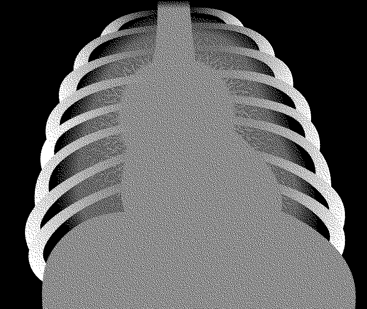
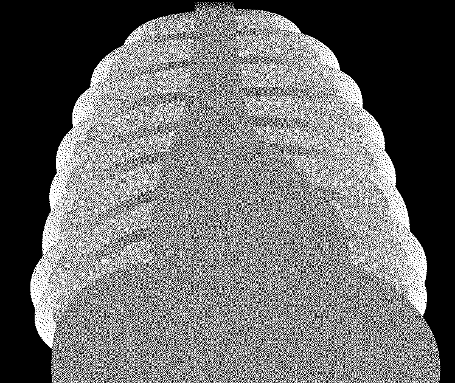

AIW-ýokançly çagalarda adaty ýokançlyklary (pnewmoniýa, içgeçme, meningit ýaly) adaty nusgalar boýunça geçirilýär. Bejerginiň netijeliligi pes bolan halatlarynda ikinji hatardaky antibakterial serişdeleri ulanmaklyk barada pikirleniň. Gaýtalanýan ýokançlyklaryň bejergini bir meňzeş nusga boýunça geçirilýär, residiwleriň sanyna seretmezden.
Emma käbir AIW bilen bagly ýagdaýlarda ýöriteleşen çemeleşmeler gerek bolýar, bular barada aşakda görkezilen.
8.4.1 Inçe kesel
AIW-ýokançly ýa-da bu ýokanç guman edilýän çagalaryň hemmesinde inçe keseli inkär etmeli. AIW-ýokançly çagalarda inçe keseli inkär etmeklik kyn bolýar. AIW-ýokanjyň ilkinji tapgyrlarynda immun ulgamynyň funksiýalary bozulmadyk ýagdaýlarynda, inçe keseliň alamatlary AIW-ýokançsyz çagalaryňky ýalydyr. AIW-ýokançly çagalarda öýkeniň inçe keseli has köp ýaýran görnüşleriň biridir. AIW- ýokanjynyň progressirlemegi bilen we immun ulgamynyň gowşamagy bilen çagalarda inçe keseliň dissiminirlenen görnüşleri köp duşýar. Inçe kesel etiologiýaly meningit, miliar inçe keseli we ýaýran inçe kesel limfaadenopatiýasy bolýar.
Inçe keseliň bejergisini AIW ýokançly çagalarda eglenmän başlamaly. Eger-de çagalar ARB başlamadyk bolsalar, ony başlamaly, çaga ony kabul edip başlandan soň, ýöne inçe keseliň bejergisini alyp başlandan 8 hepdeden soňa galmaly däl, СD4 öýjükleriň sanyna we AIW ýokanjyp kliniki tapgyryna seretmezden (bap 8.2.2).
 AIW–ýokançly bäbeklerde we çagalarda inçe keseli adaty inçe kesel anyklanmadyk çagalyňky ýaly nusga boýunça bejeriň, (Inçe kesele garşy milli görkezmelere seret goşundy 2, bap 4.7.2).
AIW–ýokançly bäbeklerde we çagalarda inçe keseli adaty inçe kesel anyklanmadyk çagalyňky ýaly nusga boýunça bejeriň, (Inçe kesele garşy milli görkezmelere seret goşundy 2, bap 4.7.2).
Izoniazid bilen öňüni alyş bejergi
Hemme AIW ýokançly çagalar inçe keseliň barlygyna barlanylmaly, sebäbi bu çagalarda inçe kesel döreme howpy ýokary. Eger-de çagada üsgülewik, beden gyzgynynyň ýokarlanmagy we agramynyň ýitirilmegi bar bolsa, onda ony inçe kesel barlygyna barlaň. Eger-de çagada inçe kesel bolmasa, oňa öňüni alyş maksady bilen izoniazid belläň 6 aýyň dowamynda.
- Izoniazid bilen öňüni alyş bejergini başlaň
 Hemme AIW ýokançly, inçe keselli näsagyň maşgalasy bilen galtaşykda (kontaktda) bolan çagalara, eger-de inçe keseliň aktiw alamatlary bolmasa-da, çagalar özlerini gowy duýsalar we gowy ösýän bolsalar hem.
Hemme AIW ýokançly, inçe keselli näsagyň maşgalasy bilen galtaşykda (kontaktda) bolan çagalara, eger-de inçe keseliň aktiw alamatlary bolmasa-da, çagalar özlerini gowy duýsalar we gowy ösýän bolsalar hem.- Hemme 12 aýdan uly AIW ýokançly, şol sanda inçe kesel babatynda bejergi alan, häzirki wagtda işjeň inçe keseliň alamatlary bolmadyk we inçe keselli näsag bilen kontaktda bolmadyklara.
- Izoniazid 10 mg/kg 1 sapar gününň dowamynda 6 aý beriň. Çaga aýda bir sapar gözegçilik ediň we eneatasyna izoniazidiň atiýaçlygyny her gözegçilikde beriň.
Bellik: 12 aýdan kiçi we AIW ýokançly çagalar, işjeň inçe keseliň alamatlary bolmadyk we inçe keselli näsag bilen kontaktda bolmadyklar, izoniazid bilen bejergini almaly däl AIW ýokançy bejerilýän wagty.
8.4.2 Pnewmosist pnewmoniýa
Agyr pnewmoniýaly AIW položitel çagalara pnewmosist pnewmoniýa (PSP) guman etmeli. Bejerilmedik PSP ölümçiligiň sany ýokarydyr. Şol sebäpli wagtynda bejergini başlamaklyk örän möhümdir.
Kesel kesgidi
 PSP köplenç 12 aýdan kiçi ý çagalarda başlaýar (keseliň has köp düşýan ýaşy 4-6 aýlyga gabat gelýär);
PSP köplenç 12 aýdan kiçi ý çagalarda başlaýar (keseliň has köp düşýan ýaşy 4-6 aýlyga gabat gelýär);- Ýiti ýa-da ýiti däl başlandyç gakylyksyz üsgülewik we kynlaşan dem alyş;
- Subfenril beden gyzgynynyň ýokarlanmagy ýa-da onuň bolmazlygy;
- Sianoz ýa-da hemişelik gipoksiýanyň beýleki alamatlary;
- Antibakterial bejerginiň birinji hataryndaky dermanlar bilen bejergä ilkinji 48 sagadyň dowamynda gowşak reaksiýa;
- Laktatdegidrogenazanyň derejeleri ýokary.
Kliniki we rentgenologik alamatlara esaslanyp PSP kesel kesgidini takyk goýup bolmaýan hem bolsa, agyr dem ýetmezçilik (tahipnoýe, döş kapasasynyň çykyp duran ýerleriniň aýdyň içiçne çekilmegi, sianoz) ganyň kislorod bilen doýgunlygynyň pes bolmagy we auskultatiw alamatlarda öýkende sesleriň bolmazlygy we mahsus däl alamatlartyň bolmagy pnewmosist pnewmoniýa üçin mahsusdyr.
- Döş kapasasynyň Rentgen barlagy ýalanotrisatel netije berýär 10-20% tassyklanan PSP-da, emma, rentgen barlagynda ikitaraplaýyn diffuz interstisial infiltrasiýa (“matowyý aýna” suraty) kökýany limfa mazleriniň ulalmagy bolmazdan we suwuklygyň ýoklyynda PSP görkezýär. PSP pnewmotoraks emele gelmegi mümkin.
Laborator barlaglar üçin gakylygy ýa-da bogazdan alnan suwuklygy alýarlar.
Bejergi
- Derrew agyzdan ýa-da mümkin bolsa damardan kotrimaksazol uly möçberlerde beriň (trimetoprim 8mg/kg 1 möçber, sulfametaksazol 40 mg/kg 1möçber) 3 sapar günüň dowamynda 3 hepde.
- Eger-de çagada agyr allergiki reaksiýa bolsa, kotrimaksazoly pentamidin (4mg/kg 1 sapar günüň dowamynda) damardan görnüşinde 3 hepdäniň dowamynda çalşyň. Eger-de çagada pnewmoniýanyň alamatlary bar bolsa we ol AIW-ýokanjy ýaýran ýerden gelen bolsa kömek bermekligiň prinsipleri bap 4.2.1 görkezilen.
- 1-2 mg/kg prednizolony bellemeklik keseliň ilkinji döwürlerinde gowy netije berer, haçanda agyr gipoksiýa we dem ýetmezçilik bolan ýagdaýlarynda.
- Öňüni alyş maksady bilen ko-trimaksazol bilen bejergini çaga gowulanandan soň hem dowam ediň we, çaganyň ARB alýanlygyna göz ýetiriň.
8.4.3 Limfoid intersisial pnewmonit (LIP)
Kesel kesgidi
Keseliň ilkinji günlerinde alamatlaryň bolmazlygy hem mümkin, ýöne soňra bolsa çagalarda indiki alamatlar döreýär:
- dyngysyz üsgülewik, käbir ýagdaýlarda kynlaşan dem alyş bilen;
- gulagyň ýanyndaky limfa mäzleriniň ikitaraplaýyn ulalmagy;
- persistirleýän ýaýran limfaadenopatiýa;
- gepatomegaliýa we beýleki ýürek ýetmezçiliginiň alamatlary; we
- barmaklaryň, baraban taýajyklary" ýaly derformasiýasy ;
- Limfoid interstisial pnewmoniti guman ediň, eger-de rentgen barlagda torly-düwünli surat bar bolsa, ony inçe kesel we ikitaraplaýyn kökýany limfadenitden tapawutlandyrmaly (bap 8.4.5).
Bejergi
- Prendizolon bilen bejergini başlamazdan ozal bakterial pnewmoniýany antibiotikler bilen bejerip görüň (bar 4.2)
- Kortikosteroidlar bilen bejergini diňe öýkeniň rentgen barlagynda mahsus alamatlaryň bar bolan wagtynda we plýus indiki alamatlaryň haýsydyr biri bolanda başlaň:
 çaltlaşan ýa-da kynlaşan dem alyş;
çaltlaşan ýa-da kynlaşan dem alyş;- sianoz;
- pulsoksimetriýada ganyň kislorod bilen doýgunlylygy 90% az.
- Agyzdan prendizolony 1-2 mg/kg gündelik 2 hepde beriň. Soňra bjerginiň netijeliligi esasynda 2-4 hepdäniň dowamynda möçberi azaldyň. Inçe keseliň gaýtadan döremeginden ägä boluň.
- ARB bejergini başlaň, eger-de çaga ony almaýan bolsa.
8.4.4 Kömelejikli bozulmalar
Agyz boşlygynyň we gyzylödegiň kandidozy
- Agyz boşlygynyň kandidozyny nistatiniň suspenziýasy (100 000 ЕД/ml) bilen bejeriň 1-2 ml suspenziýany agyz boşlygyna 4 sapar günüň dowamynda 7 gün beriň. Bu serişdäniň ýok ýerinde 1% gensianwioletiň ergini bilen bejeriň. Eger-de bu serişdeler netijesiz bolsa, we ýerinde 2% mikanazol geli bar bolsa, onda onuň kömegi bilen 5 ml 2 sapar günüň dowamynda bejeriň.
Çagada gyzylödegiň kandidozyny guman ediň, eger-de ol emdirilýän wagty aglasa, emen we gägiren wagty agyry bolsa ýa-da onda köp mukdarda tüýkülik emele gelýän bolsa ýa-da iýmitlenmeden ýüz öwürse. Bu ýagdaý köplenç (ýöne hökmany däl) agyz boşlygynyň kandidozy bilen bile geçýär. Eger-de agyz boşlygy seredilende kandidoz alamatlary tapylmadyk bolsa, flýukanazol bilen bejergini geçirip görüň. Ýuwdunmaklygyň agyrylydygynyň beýleki sebäplerini (mysal üçin, Sitomegalowirus ýokanjy, ýönekeý gerpes, limfoma we seýrek ýagdaýlarda Kapoşiniň sarkomasy) çaga gerek bolan bejergini geçirip boljak has kämil hassahanalara ýollaň, degişli barlagy we bejergini geçirmeklik üçin.
- Agyzdan flýukanazoly (3–6 mg/kg 1 sapar günüň dowamynda) 7 günüň dowamynda beriň, kadadan çykma çagada bagryň aktiw zeperlenmeleri bolan ýagdaýlary.
- Soňky ýagdaýlarda amfoterisin B (0,5 mg/kg/möçber 1 sapar) damardan 10-14 günüň dowamynda beriň. Bu nusga agyzdan berilýän serişdelerden netije az bolan wagtlarynda, flýukanazol berip bolmaýan ýagdaýlarynda ýa-da dissiminirlenen kandidoz emele gelme howpy bolan (mysal üçin leýkopeniýaly çagada) ýagdaýlarynda maslahat berilýär.
Kriptokokk meningit
AIW-ýokançly çagada meningit alamatlary bolan ýagdaýlarynda kriptokokk etiologiýaly meningidi guman ediň. Bu kesel köplenç ýiti däl geçişli, dowamly kelle agyry; käwaglar bolsa ýeketäk alamatbu psihik taýdan üýtgeşmeler bolup durýar. Kesel bil oňyrgasyndan alnan suwuklygy tuş bilen reňlenen jogaplary esasynda tassyklanýar.
- Bejergini amfoterisin bilen 0,5–1,5 mg/kg/ günüň dowamynda 14 gün bermeklik bilen geçirilýär, soňra flýukonazol 6-12 mg/kg (maksimal gündelik möçber 200 mg). 8 hepdäniň dowamynda beriň.
- Bejeriş kursy gutarandan soň flýukanazol bilen 6 mg/kg (maksimal möçber günüň dowamynda -200 mg) öňüni alyş bejergini berip başlaň.
8.4.5 Kapoşi sarkomasy
Deriniň düwünleýin zeperlenmeleri bolan, diffuz limfoadenopatiýaly, gözleriniň töwereginde gök bolan we kentlewigiň we konýuktiwanyň zeperlenmeleri we gözleriniň aşagynda gök bolan çagalarda Kapoşi sarkomasyny guman ediň. Kesel kesgidini amaly alamatlaryň esasynda, ýöne ony deridäki zeperlenme ojaklaryndan ýa-da limfo düwünlerinde biopsiýa almaklyk bilen hem tassyklap bolar.
Bu keseli agyr uzaga çeken içgeçmeli, agramyny ýitirýän, içege geçmezliginiň alamatlary bolan, içinde agyryly we plewral boşluklarynda köp mukdarda suwuklykly çagalarda guman ediň. Bu çagalary gowusy ýokary hünärmenli hassahanalara bejergi üçin ýollamaly.